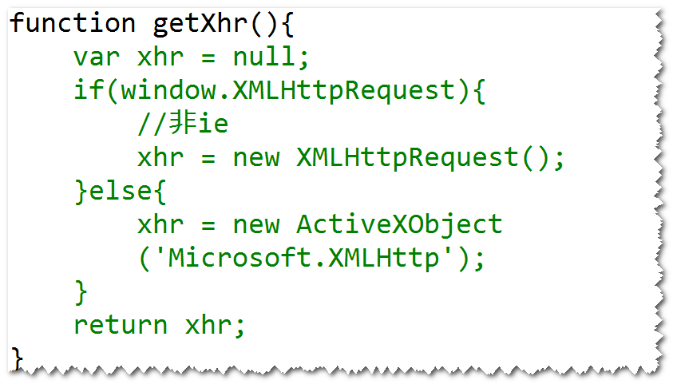

ajax是一种用来改善用户体验的技术，其本质是利用浏览
器提供的一个对象(XMLHttpRequest,也可称之为ajax对象)
向服务器发送异步请求;服务器返回部分数据(不是一个完整
的页面),浏览器利用这些数据对当前页面做部分更新；
整个过程，页面无刷新，不打断用户的操作。
注：异步请求，指的是，当ajax对象发请求时，浏览器
不会销毁当前页面，用户仍然可以对当前页面做其它的操作。

a. onreadystatechange:绑订一个事件处理函数，
该函数用来处理readystatechange事件。
注：当ajax对象的readystate属性值发生了改变，
比如，从0变成了1，则会产生readystatechange事件。
b. readyState:有5个值(0,1,2,3,4),表示ajax对象
与服务器通信的进展。其中，4表示ajax对象已经获得了
服务器返回的所有的数据。
c. responseText:获得服务器返回的文本数据。
d. responseXML:获得服务器返回的xml数据。
e. status:获得状态码。
step1. 获得ajax对象。
比如 var xhr = getXhr();
step2. 发送请求。
方式一: get请求
xhr.open('get',
'checkuname.do?uname=Sally',true);
xhr.onreadystatechange = f1;
xhr.send(null);
注:
true:异步请求。
false:同步请求(当ajax对象发送请求时，浏览器会锁
定当前页面，用户不能够对当前页面做任何操作）。
方式二: post请求
xhr.open('post','checkuname.do');
xhr.setRequestHeader('content-type',
'application/x-www-form-urlencoded');
xhr.onreadystatechange = f1;
xhr.send('uname=Sally');
注：
按照http协议要求，如果发送的是post请求，
在请求数据包里面，应该包含有content-type消息头;
默认情况下，ajax对象不会添加该消息头，所以需要
调用setRequestHeader方法来添加。
step3. 编写服务器端的程序。通过只需要返回部分
数据（不再需要返回完整的页面）。
step4. 写事件处理函数。
比如:
function f1(){
if(xhr.readyState == 4 &&
xhr.status == 200){
//获得服务器返回的数据
var txt = xhr.responseText;
//更新页面
...
}
}
当使用ie浏览器时，ajax对象如果发送的是get请求，
会检查请求地址是否访问过，如果访问过，则不再发
送新的请求，而且显示之前访问过的结果。(也就是
说，第一次访问请求时，会将结果缓存下来)。
在请求地址后面添加一个随机数。
产生乱码的原因:
ie浏览器默认使用gbk对中文进行编码，其它浏览器
默认会使用utf-8对中文进行编码。服务器端默认会
使用iso-8859-1来解码。
解决方式:
step1. 服务器端统一使用utf-8来解码。比如
URIEncoding="utf-8"
step2. 在客户端，使用encodeURI函数对中文数据进行
编码。
注:encodeURI是javascript内置的函数。
产生乱码的原因:
浏览器默认会使用utf-8对中文进行编码，服务器使用
iso-8859-1来解码。
解决方式:
request.setCharacterEncoding("utf-8");